Доклады 2.0
-
Костин Евгений SeoPult , Руководитель департамента продаж
SEO-аналитика в Google Docs
— как правильно работать с семантикой
— какие данные по сайту можно и нужно мониторить
— обработка данных в Google Docs
— построение понятных всем графиковПроголосовало:
Требуется регистрация на конференции
192
-
Молчанов Алексей CallbackKILLER , Предприниматель
600 тысяч рублей в день на продаже видеорегистраторов только через Яндекс Директ
Краткие тезисы (содержание) доклада:
Рассказываю о том, как мы продавали одну модель видеорегистратора на 600 тысяч рублей в день. С какими проблемами столкнулись.Подробные тезисы.
1. Вступление (описание проблемы):Ваши клиенты везде.
Модель сбора околотематических запросов. Модель позволяет делать поток продаж даже на те товары, которые никто не ищет. Какие инструменты для сбора используются.
Автомобильный трафик в Яндекс Директ
В интернете очень много автомобильного трафика в том числе и в Яндекс Директ. Можно работать на горячих запросах их не много и они дорогие но мы работаем на околотематических запросах. За счет большого объема можно ставить цену за клик 3 рубля и выбирать десятки тысяч кликов в день.
Продажи видеорегистраторов.
Сбор околотематического ядра для продажи видеорегистраторов. Разбор статистики из Яндекс Метрики и Яндекс Директа. Результат 600 тысяч рублей в день. Виджеты для увеличения конверсии – онлайн-консультант и обратный звонок с сайта.
Сложности при использовании околотематического трафика.
При использовании околотематического трафика конверсия в продажи падает, поэтому приходится укреплять отдел продаж «бойцами», которые готовы работать с «прохладными» лидами.2. Основное содержание доклада:
Ваши клиенты везде.
Как собирать клиентов в Яндекс Директ даже на такой товар, который никто не ищет. Модель сбора околотематических запросов.
Автомобильный трафик в Яндекс Директ.
Как можно выбирать 5-10 тысяч кликов в денья Яндекс Директа по 3 рубля за клик.
Продажи видеорегистраторов.
Какие запросы использовали. Статистика Яндекс Метрики. Ятатистика Яндекс Директ.Проголосовало:
Требуется регистрация на конференции
168
-
Долгополов Илья Реаспект (Reaspekt) , Маркетолог
Как наладить контент-маркетинг? Авторы где-то рядом.
Кто сделает лучше: фриланс vs внутренний сотрудник?
Как сделать из каждого сотрудника автора?
Материальная и нематериальная мотивация сотрудников для написания статей?
Внутренний редактор. Кто он и что должен уметь?
Почему клиент, это тоже автор?
Как выбрать подходящее издание?Проголосовало:
Требуется регистрация на конференции
67
-
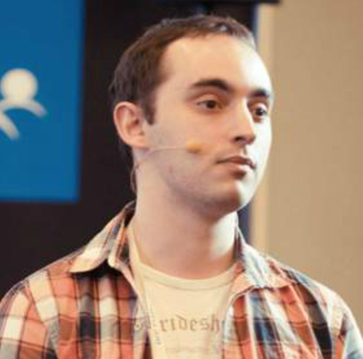Рыжкин Андрей AGIMA , CTO
Профессия: тимлид
В последнее время особенно актуальной становится тема внедрения в бизнес-процессы компании такого специалиста, как тимлид. В нашей компании очень много проектов со сложными интеграционными задачами, поэтому основная нагрузка ложится на плечи тимлидов — на некоторых проектах у нас их бывает даже по два. В AGIMA эта должность появилась 3 года назад, и сейчас мы имеем глубокое понимание зачем они нужны, что должны делать, и какая у них должна быть мотивация.
- Техническое ведение проектов;
- Контроль процессов и минимизация рисков;
- Контроль рентабельности и мотивация;
- Контроль своей команды;
- Контроль качества проекта;
- Разделение ответственностиПроголосовало:
Требуется регистрация на конференции
49
-
Кочеванов Александр БиБосс.ру , дизайнер
Повышение продуктивности без употребления наркотиков
Как построить рабочий процесс.
Как успевать больше за 8 часов.
Как бороться с ленью и апатией.
И многое другое.Проголосовало:
Требуется регистрация на конференции
47
-
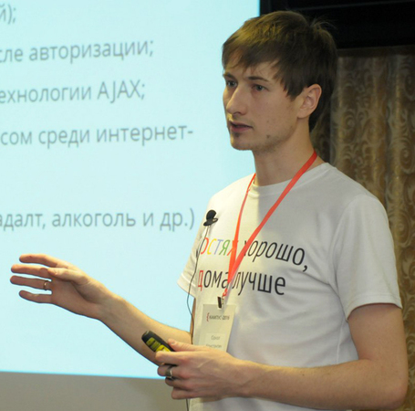Сокол Константин KISLOROD , Руководитель отдела продвижения
SEO для стартапа - клиенты за копейки в условиях экономии бюджета. Рабочие стратегии
1. Утром — SEO, вечером — стартап. Когда начинать продвижение стартапа?
2. Стартапы разные, ошибки в seo одни и те же
3. Как раскрутить волчок прироста трафика на сайт
4. Стратегия прироста естественных ссылок
5. Формула успешного контент-маркетинга
6. Стратегия SERM
7. Каким стартапам SEO не помощникПроголосовало:
Требуется регистрация на конференции
39
-
Коротков Яков Uplab , Координатор отдела SEO
Автоматизация процесса отчетности по SEO и CPC. Как сделать подробный отчет для клиента за 1 день.
1. Как автоматизировать ручную работу и сократить время на подготовку отчетов по рекламе.
2. Как превратить данные в информацию.
3. Имиджевая наглядность и презентабельность: как сделать отчет понятным для клиента.Проголосовало:
Требуется регистрация на конференции
37
-
Огородникова Елена Nimax , Руководитель веб-отдела
Оптимизация цифрового производства
Прошлым летом после нескольких очень непростых месяцев мы провели стратегическую сессию и нашли для себя ответ на вопрос “Что делать, чтобы выжить в новых реалиях” (ответ лежит на поверхности, но, впрочем, никому не нравится).
После этого мы изменили почти все процессы в компании, структуру команды, подходы, стек услуг и внутренние установки. Это привело к результатам настолько хорошим, что мы хотим поделиться нашим опытом. Расскажем:
- Как успокоить сотрудников, вернуть веру и задать новый вектор развития.
- Как укрепить каркас команды, распределить груз ответственности и создать среду для развития.
- Как оптимизировать ФОТ, увеличив объем производства, и при этом не потерять в качестве.
- Как выбрать правильные инструменты и убедить людей правильно их использовать.
- Как управлять потоком из 35 активных проектов, минимизируя простои ресурсов и заминки в производстве.
- Как начать ценить, считать и уважать время друг друга.
- Как перейти от интуитивного управления проектами к четким и бодрым регламентам и превратить нормальных менеджеров – в хороших.
- Как сократить средний срок производства в два раза.
- Как сделать клиентский сервис заметно лучше, а продажи – чуть более предсказуемыми.
- Как лимитировать ресурсы на внутренние задачи, но не провалить PR.
- Как начать действительно считать бюджет каждого проекта в реальном времени, сверять амбиции со сметой и работать в плюс.
- Как обеспечить финансовую стабильность в отдельно взятом бизнесе и смело смотреть в завтрашний день.
- Как застраховаться от незаменимости сотрудников.
- Как построить процесс по контролю качества и шаг за шагом научиться делать свою работу неизменно и предсказуемо хорошо.Проголосовало:
Требуется регистрация на конференции
35
-
Зонов Кирилл Racoons Group , CEO
Семь раз отмерь. Как сэкономить на разработке.
Специфика нашей компании - веб-продакшн, мы видим огромное множество технических заданий, работаем и с продакт менеджерами агентств и с всего боящимися клиентами. Лишь немногие из них знают внутреннюю кухню разработки и вообще задумываются о будущем проекта. В итоге тратится много денег на доработки, возникают истории конфликтов предыдущих подрядчиков с клиентами и прочие неприятные инциденты. В своем докладе я бы хотел рассказать о ряде нюансов, которые не займут много времени в начале проекта, но позволят избежать мучительных переделок в будущем.
Проголосовало:
Требуется регистрация на конференции
35
-
Захаров Вадим Семантика.Онлайн & Захаров Групп , Руководитель
Как заработать сотни тысяч рублей на контентных сайтах
Контентные сайта - это отличный способ достижения финансовой независимости, даже в условиях кризиса, а в дальнейшем возможность выхода на сотни тысяч рублей чистой прибыли в месяц.
1. Что такое контентные сайты, и на чем мы зарабатываем? Чем привлекательно именно это направление заработка? Кому оно подходит?
2. Цифры: сколько вкладываем и сколько и когда получаем?
3. С чего начинать и что делать? Алгоритм создания и заработка. Обзор основополагающих факторов успеха.
4. Обзор основных способов монетизации.
5. Какие могут быть заработки. Примеры историй успеха.Проголосовало:
Требуется регистрация на конференции
34
-
Росляков Илья MachineZone , Engineering Manager
Найм: ой, скоро моё первое интервью!
Основы найма: вопросы, план, поведение, выводы
Процесс найма: реклама, телефонная беседа, задание, офер
Тайминг, поведенческое интервью, психология
Хорошие и плохие вопросыПроголосовало:
Требуется регистрация на конференции
34
-
Ананьев Антон Интернет-агентство Sabit , Директор по развитию
Где прячутся деньги агентства и как их искать
- Клиенты бывают рентабельными и не очень. Как вычислить последних?
- Как сделать так, чтобы вся команда фиксировала время работы над проектами?
- Что делать со временем менеджеров?
- Статистика есть. Что дальше?
- На какие грабли тайм-трекинга мы успели наступить. Что мы с ними сделали.
- Во сколько обходится сам тайм-трекинг? Стоит ли игра свеч?Проголосовало:
Требуется регистрация на конференции
30
-
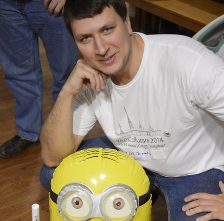Чесноков Илья Независимый программист , Perl-разработчик
Нюансы удаленной работы с зарубежным заказчиком
Расскажу о том, как работать на зарубежную компанию удаленно из России, отвечу на следующие вопросы:
ИП или физлицо, плюсы и минусы. Как зарегистрировать ИП.
Как сделать, чтобы валютный контроль доставлял минимум проблем (hint: подумать об этом еще во время составления договора с клиентом). Пример работы на бирже труда oDesk.
Упрощенная и патентная система налогообложения.
Об инструментах ИП-шника - как вести бухгалтерию не зная 1С и отправлять отчетность через Интернет.Bonus: как зафиксировать для себя удобный валютный курс на нужное время с небольшими вложениями.
Проголосовало:
Требуется регистрация на конференции
28
-
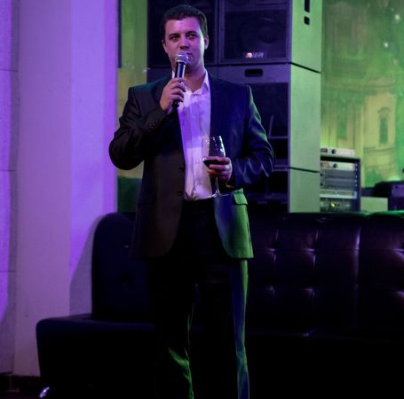Полубабкин Евгений Vigrom Corp , Исполнительный директор
Построение продуктовых команд внутри компании!
Обычная структура ИТ компании: Отдел разработки, Отдел Управления продуктами, Отдел тестирования и т.д.. Мы Уделяли много внимания процессам: agile, scrum, kanban. Концентрировались на сроках, трудозатратах, эффективности реализации и взаимодействия. Но в 2015 году мы решили во главу компании поставить Продукты и Цели Компании, для этого мы изменили себя и компанию. Про командную работу говорилось много, я же расскажу про опыт нашей компании. Это был интересный и не простой опыт.
Чем я готов поделиться и чего точно не будет:
Я расскажу:
1. только о нашем опыте
2. как и почему мы приняли такое решение
3. с какими трудностями мы столкнулись при переходе
4. как сформировали команды по продуктам
5. с какими сложностями мы столкнулись и сталкиваемся до сих пор после перехода
6. как мы решили мерить эффективность сотрудников, команд и процесса
7. полученные выгоды и преимущества
8. что дальше
Чего не будет:
1. Я не покажу Вам философский камень, который можно применить абсолютно к любой компании
2. Я не буду призывать Вас делать тоже самое
3. Я минимально затрону гибкие методологииПроголосовало:
Требуется регистрация на конференции
28
-
Фахрутдинов Салих БиБосс , Руководитель группы разработчиков
Continuous Integration. Кому он нужен?
Расскажу что такое Continuous Integration (CI). Основные правила его существования. Какие они бывают. Преимущества и не достатки. И с чего лучше начать.
Проголосовало:
Требуется регистрация на конференции
26
-
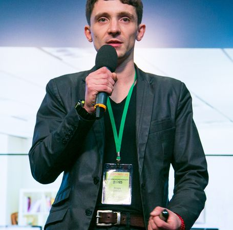Саплин Игорь IDMsoft , Управляющий партнер, директор по маркетингу
Создание успешного стартапа с минимальным бюджетом
Правильный выбор ниши
Разработка версии 1.0 с минимальным бюджетом
Создание маркетинговой стратегии партизанскими методами
Трафик без затратПроголосовало:
Требуется регистрация на конференции
26
-
Сокол Константин KISLOROD , Руководитель отдела продвижения
20 типичных ошибок при проектировании процесса чекаута
- Причины брошенных корзин, их реанимация;
- 7 способов вернуть упущенных клиентов;
- Нелепые ошибки, которые стоят вам миллионы рублей;
- Тестируем корзину на своей ЦА;
- Кейсы взрывного роста продаж среди наших клиентов.Проголосовало:
Требуется регистрация на конференции
24
-
Гуляев Андрей SEO.RU , Эксперт по поисковой оптимизации
Фокус SEO на юзабилити - трёх зайцев одним выстрелом
Юзабилити сейчас - краеугольный камень SEO продвижения.
Важные показатели и метрики для анализа поведения пользователей.
Что нужно учитывать при создании и переработке сайта чтобы пользователям было удобно им пользоваться.
10 основных проблем юзабилити коммерческих сайтов с примерами.Говорим SEO, подразумеваем развитие и повышение эффективности сайта. Делая ставку на повышение удобства пользования - юзабилити, мы удерживаем пользователей, повышаем видимость в поиске и отдачу от сайта.
Проголосовало:
Требуется регистрация на конференции
23
-
Крайнов Владислав AGIMA.mobile , Директор по развитию
Скорая помощь: мобильные приложения для автоматизации бизнес-процессов.
- История болезни: проблематика бизнес-процессов;
- Панацея: автоматизация с помощью mobile;
- Пользователь=партнер: мобильный эксперимент CarPrice;
- GTM и другие инструменты контроля и тестирований;
- Динамическое развитие приложения на основе данных.Проголосовало:
Требуется регистрация на конференции
23
-
Шитиков Александр AGIMA.mobile , Руководитель отдела разработки
Кросс-платформенная разработка приложений. Выделенная бизнес-логика.
- Гибридные приложения;
- Известные технологии: Xamarin, RoboVM, Dropbox djinni;
- Java как мост между платформами и языками;
- Варианты разработки с использованием Java Native Interface.Проголосовало:
Требуется регистрация на конференции
19
-
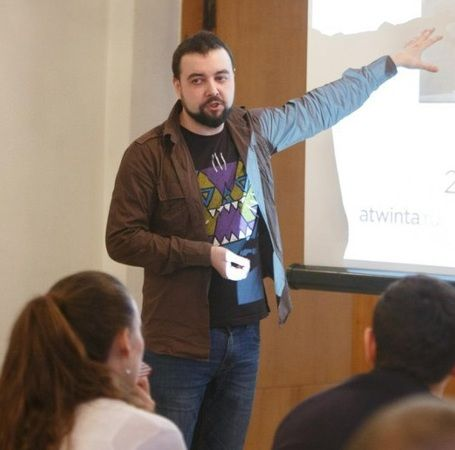Карбышев Илья Студия Атвинта , SEO оптимизатор
Гордость и предубеждения провинциального SEO
Какие технологии SEO работают в регионах?
Какие сайты занимают ТОП Яндекса в регионах?
Работа с микробюджетами
Особенности менталитета владельцев и посетителей сайтов
Тренды SEO 2016 в контексте продвижения в регионах : контент-маркетинг, поведенческие факторы, юзабилити
Кейс по самостоятельному продвижению проекта без вложенийПроголосовало:
Требуется регистрация на конференции
18
-
Люкшина Алена AGIMA.social , Директор по развитию
Миллион просмотров. Привлечь, увлечь и заработать с помощью видеоконтента.
- Эволюция: как короткие видео и гифы стали главным контентом социальных сетей, а vine и coub изменили стандарты видео.
- Real-time Marketing: извлекаем пользу из эффекта присутствия с помощью Periscope, Meerkat, Facebook Live и Snapchat. От интервью в прямом эфире до презентации продукта в режиме live.
- Кейс Runlab. Как увеличить охват офлайн-мероприятия и привлечь новых клиентов по всей стране с помощью Periscope.
- Сам себе режиссёр. Чек-лист для создания эффективных видео без съемочной команды и больших бюджетов.
- Эффект лабутенов. Шок, умиление, провокация и 7 других эмоциональных триггеров для создания вирального контента.
- Смешно и прибыльно: зачем Facebook купил MSQRD, почему это важно для отрасли и как зарабатывать на радости пользователей?
- Кейс Триколор. Пользовательский видеоконтент: бесплатно, эксклюзивно и с любовью.Проголосовало:
Требуется регистрация на конференции
18
-
Кокоулина Ольга Elephant Games , маркетолог
Организация тестирования игр
Тестирование игр — это извечная проблема, мешающая разработчикам как минимум спокойно спать: «Что нужно тестировать? Можно ли автоматизировать процесс тестирования и как это сделать? Как приступить к процессу автоматизации? Какие инструменты существуют?» На эти и другие вопросы ответит главный программист Elephant Games Дмитрий Гаязов.
Проголосовало:
Требуется регистрация на конференции
18
-
Кочеванов Александр БИБОСС , дизайнер
Цикл жизни дизайнера. Где его взять, что с ним делать и когда он "умрет"?
Почему в одних компаниях дизайнеры приходят и уходят, а в других задерживаются надолго?
Подумаем над несколькими вопросами:
• Поиск дизайнера в команду.
• Критерии отбора и принципы оценки при найме дизайнера.
• Дизайнер есть. Что дальше?
• Как организовать работу для долгосрочного сотрудничестваПроголосовало:
Требуется регистрация на конференции
18
-
Мыгаков Александр Команда F5 , CEO
Мониториг, BI системы для digital и клиентов
Существующие bi системы
Существующие системы мониторинга
Кастомные разработки
Какие показатели наблюдаем
Стоимость внедрения
Стоимость использованияПроголосовало:
Требуется регистрация на конференции
17
-
Красильникова Юлия Купи Батон! , QA
Тестирование комплекса информационных систем в финансовом секторе
Как тестировать сложный комплекс информационных систем?
Как минимизировать риск попадания ошибок на продуктив?
Что такое ЕТМ, зачем она нужна и как ее применять на практике?Проголосовало:
Требуется регистрация на конференции
16
-
Shmyrov Vsevolod Яндекс ,
Возможности Конструктора Яндекс.Карт
В докладе пойдет речь про инструмент, который позволяет владельцам сайтов без особых усилий добавлять себе на сайт интерактивные карты Яндекса даже без навыков программирования. Про Конструктор Яндекс.Карт. Совсем недавно произошел выпуск новой версии мажорной версии. В докладе пойдет речь про всё нововведения, кейсы использования, про различия в сравнении с API Яндекс.Карт.
(доклад продолжительность 25-30 минут)
Проголосовало:
Требуется регистрация на конференции
16
-
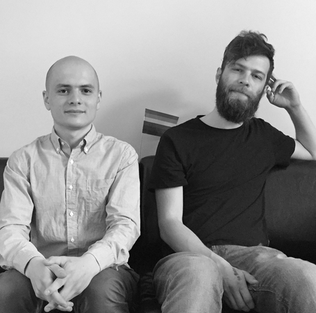Галимов Самат Горячев Борис Медуза , Технический директор и главный бэкенд разработчик
Как мы делаем медузу
Isomorphic react сайт, микросервисы, большой ruby on rails монолит и еще немного микросервисов. Много разных апи. Чуть-чуть про особенности dev-сетапа, когда надо за день поработать над несколькими проектами сразу. Как начать слезать с ruby(python, etc...) и перелезать на, например elixir, и почему это вообще стоит делать. Ошибки, которые мы совершили и чуть-чуть размышлений о том, почему так получилось.
+ мобильные приложения медузы — iOS, Android, WindowsПроголосовало:
Требуется регистрация на конференции
15
-
Гиниятуллин Искандер БИБОСС , Руководитель отдела разработки
Sphinx - как сделать поиск по разнородным данным, более 2 миллионов документов
– удобный конфиг сфинкса - шаблоны индексов и источников, автоматический деплой конфига на множество серверов и т.д.
– real-time и delta-индексы на практике - сложности и подводные камни
– поиск разнородных данных в рамках одного индекса
– YII 2 и сфинкс - друзья навекПроголосовало:
Требуется регистрация на конференции
15
-
Кузнецов Максим AGIMA.mobile , Team Lead, Senior Developer
Непрерывная интеграция с Jenkins.
- Оптимизация процессов разработки с помощью непрерывной интеграции;
- Условия, при которых применимо решение;
- Jenkins — инструмент для реализации CI;
- Пример CI с использованием Jenkins;
- Преимущества и недостатки CI;
- Опыт использования.Проголосовало:
Требуется регистрация на конференции
14
-
Зыкин Артём Nimax , Руководитель отдела видео
Видео‑контент: особенности создания и использования
Постараюсь рассказать о задачах, которые решает видео и ответить на первые вопросы по теме.
— Видео как форма контента крутая или нет?
— О видео в интернете — жанры и возможности
— Фоновое видео на сайте это классно?
— Объясняющие видео — панацея или баловство?
— Что ещё снять о компании?
— E-commerce видео — снять самим, заказать или отказаться?
— Идея, сюжет, сценарий — вот это всё откуда?
— «Мы получим вирусный эффект?»
— Чем отличается производство видео?
— Как не облажаться.
— Кому доверить.Проголосовало:
Требуется регистрация на конференции
13
-
Школдин Владислав Атвинта , Специалист по продвижению
Шлем клиента на три буквы...или что такое RFM-анализ.
- Что такое RFM
- Инструменты RFM анализа
- Как провести RFM анализ
- Цепочка писем для сегментов
- Ретаргетинг в соц.сетях.Проголосовало:
Требуется регистрация на конференции
13
-
Гиниятуллин Искандер БИБОСС , Руководитель отдела разработки
Как мы создавали группу сайтов на разных доменах с единым центром аутентификации и авторизации.
Теория - какие существуют подходы, позволяющие реализовать кросс-доменную авторизацию пользователей, а также одновременную авторизацию на группе сайтов при логине на одном из них (неважно, каком)
Реальный опыт создания такой группы сайтов
Подводные камни при работе с единым ЦАПроголосовало:
Требуется регистрация на конференции
12
-
Юнин Иван ООО "Авто.ру Холдинг" , Менеджер проектов
Монетизация сервиса на примере auto.ru
Старт, с чего начать развивать
- Анализ услуг
- Какие метрики использовать
- Эмоциональная и рациональная покупка, влияет ли
- Сегментирование услуг
- Работа по трем составляющим дохода от услуг:
- Стоимостью услуг
- Эффективностью услуг
- Конверсия в покупку
- Итоги и результаты
- Типичные ошибки на примерахПроголосовало:
Требуется регистрация на конференции
10
-
Школдин Владислав Атвинта , Специалист по продвижению
Сквозная аналитка в Google Analytics. От CPC до CPO.
- Все каналы продаж в одном месте.
- Связь офллайн продаж с онлайн.
- Отправка данных о пользователях в CRM.
- Оптимизация рекламных каналов.
- Модель атрибуции.Проголосовало:
Требуется регистрация на конференции
9
-
Шитиков Сергей MediaSoft , Технический директор
Субподряд на PHP. Модели и секреты эффективной работы.
- Почему субподрядная история интересна. Нюансы работы по такой модели, плюсы и минусы работы на субподряде у других компаний;
- Ответственность — кто за что отвечает, чтобы проект получился качественно, в срок и рентабельно для всех;
- Модели взаимодействия агентства и подрядчика — проект под ключ или ТМ, влияние менеджмента на проект;
- Как работать двум компаниям так, чтобы выстраивались долгосрочные отношения с большой отгрузкой.Проголосовало:
Требуется регистрация на конференции
9
-
Кукина Анна IT company ASMART , Директор по развитию
PR в IT-индустрии: как продвинуть региональную веб-студию.
Как стать известными без рекламного бюджета?
Как продавать свои услуги через SMM в IT
Времени мало, а задач много - ДЕЙСТВУЙ! (тайм-менеджмент от гуманитария)
Успешные кейсы (те, кто смогли...)
Журналисты любят умных программистов (Media Relations в IT)Пример подобного выступления:
http://www.slideshare.net/AnnaKukina/pr-pr-58693282Проголосовало:
Требуется регистрация на конференции
9
-
Горностаев Михаил OneRetarget , Руководитель отдела продаж в Oneretarget
Ретаргетинг для e-commerce
- Ретаргетинг - незаменимый инструмент продаж.
- Но для максимальной эффективности нужно знать как его делать и где.
В докладе: типы ретаргетинга, особенности, кейсы.Проголосовало:
Требуется регистрация на конференции
9
-
Вотчицев Павел FunCorp , Product Manager
Организационный дизайн динамичных организаций: Research Progress Report
Google и другие интернет и high-tech компании известны своими достижениями в корпоративной культуре, управленческих подходах и практиках, отношением к сотрудникам, а также он-лайн и офф-лайн инструментами для совместной работы.
Многие из этих практик и инструментов организационного дизайна применимы в других индустриях и организациях – от стартапов и корпораций до университетов и государственных структур.
Один из ярких примеров такой практики - это система OKR (Objective - Key Results: человеческая замена KPI, применимая в Agile-процессах).С 2014 года мы с группой единомышленников из GameChangers.ru проводим исследование “Организационный дизайн динамичных организаций” и готовы предоставить анализ и рекомендации по использованию наиболее эффективных инструментов и методов стратегического планирования в следующих сферах:
- как организовано управление информацией и принятие решений,
- как распределены обязанности и ответственность,
- как организовано получение обратной связи сотрудников,
- как культура и основные ценности организации воплощаются в конкретных инструментах и практиках,
- как люди, которые лучше всего подходят для определённых позиций оказываются именно на них – практики приема новых сотрудников и ротация персонала внутри компании.На текущий момент в фокусе исследования в ИТ: Google, Valve, GitHub, LinkedIn, Atlassian, Яндекс, ВКонтакте, JetBrains.
Другие сферы: НИУ ИТМО, Иннополис, РосАтом, СБерБанк, Zappos, Uber, Tesla.
Проголосовало:
Требуется регистрация на конференции
9
-
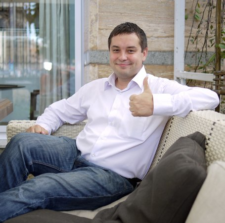Майборода Андрей GreenBusiness , Генеральный директор
Повышаем эффективность продаж в 2016 году
1. Топ-5 трудностей в системе продаж российской ИТ-компании
2. Увеличиваем предсказуемость пайплайна компании
3. Повышаем результативность менеджеров по продажам
4. Гармонизируем Продажи и Производство
5. Делаем первые шаги по выходу на западный рынокПроголосовало:
Требуется регистрация на конференции
9
-
Пичевский Максим RO!RS , управляющий партнёр
От exel-отчетов до автоматизации маркетинга. Оцифровка воронки продаж и бизнес-процессов.
- способы связи онлайна и офлайна
- результативные отчеты для аналитика
- поиск точек роста для бизнеса
- кейсы и тренды в автоматизации бизнес-процессовПроголосовало:
Требуется регистрация на конференции
9
-
 Фолунин Владимир УлГТУ , Преподаватель
Фолунин Владимир УлГТУ , ПреподавательОлимпиадные задачи как средство обучения программированию
1. Так называемые "олимпиадные задачи" — что это такое? Действительно ли они оторваны от промышленного программирования?
Взгляд четырёхкратного полуфиналиста чемпионата мира по программированию и тренера команд УлГТУ.2. Преимущества олимпиадного формата и его использование в обучении программированию.
Опыт преподавателя, который однажды решил поэкспериментировать с лабораторными работами: что из этого вышло.3. Областной турнир школьников по программированию ulivt.ru: опыт проведения и первые результаты.
Проблемы составителя задач и организатора: какими же должны быть именно учебные задачи и как сделать их доступными для учащихся и учителей?Проголосовало:
Требуется регистрация на конференции
8
-
Школдин Владислав Атвинта , Специалист по продвижению
Эксперименты в Контекстной рекламе
- Построение гипотезы;
- Как провести эксперимент;
- Как сделать правильный вывод;
- Что делать если эксперимент не завершился;
- Кейс.Проголосовало:
Требуется регистрация на конференции
8
-
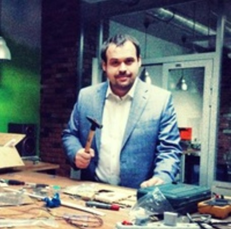Дроган Юрий hopox , CEO
Кратный рост с помощью экспериментов, гипотез и данных.
Кратный рост находится внутри команды. Я расскажу, как настроить работу Growth Team и как генерировать и тестировать гипотезы роста.
1. Экспериментируй и расти. Как растет Твиттер и Facebook.
2. 7 видов гипотез
3. Работа Команды Роста (Growth Team)
4. Гипотезы привлечения
5. Работа на основе данных
6. Гипотезы активации и ценности
7. Гипотезы удержания
8. Гипотезы виральности
9. Памятка составления гипотезПроголосовало:
Требуется регистрация на конференции
8
-
 Еникеев Камиль Институт экономики, управления и права , преподаватель
Еникеев Камиль Институт экономики, управления и права , преподавательКак живут хостелы, и чем мы можем им помочь
Разработка web-сервиса, реализующего функции по управлению номерным фондом малых гостиниц и хостелов.
Создание инструмента прогнозирования для оценки оптимальной структуры номерного фонда.
Прогнозирование спроса.
Оптимизация цены за проживание
Специфика использования панельных данных в прогнозировании.Проголосовало:
Требуется регистрация на конференции
8
-
Горелкина Мария Microsoft , Технологический евангелист
Кроссплатформенная разработка с использованием инструментов Microsoft
Возможности Visual Studio, Visual Studio Team Services, облачной платформы Microsoft Azure для разработки кроссплатформенных приложений. Apache Cordova, Xamarin, VSTS, Application Insights.
Проголосовало:
Требуется регистрация на конференции
8
-
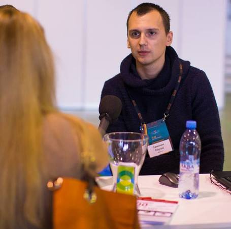Самонин Сергей Sape.ru , Руководитель проектов по контекстной рекламе
SEO и контекст - эффективное взаимодействие
- SEO и контекст как каналы интернет-рекламы
- методы их совместного использованияПроголосовало:
Требуется регистрация на конференции
6
-
Захаров Дмитрий Галимов Самат Медуза , системный инженер
Медуза на кеше
Доклад о многоступенчатой системе кеширования сайта и API Медузы. Наша система кеширования работает на дешевом железе и стоит нам всего 400 евро в месяц. Отдавай мы эти данные “в лоб” с Амазона мы тратили бы около 15 тысяч евро в месяц. Вся архитектура проекта крутится вокруг этого кеша. Мы расскажем о подводных камнях, с которыми столкнулись и поделимся решениями, которые реализовали.
Проголосовало:
Требуется регистрация на конференции
5
-
Чесноков Алексей AIDA-Media , Директор
YouTube - SMM
На сегодняшний день YouTube в недостаточной степени используется как канал продвижения продуктов, услуг и компаний. В докладе рассматриваются удачные примеры продвижения на YouTube. Примеры неудачного продвижения; рассматриваются кейсы.
В докладе дается алгоритм выбора стратегии продвижении на YouTube, рассматриваются типы видеоконтента и пр., что поможет правильно сформировать свою стратегию и успешно продвигаться на YouTube и других видеохостингах в интернете.
Данный доклад не является рекламным, т.к. в нем не рассматривается реклама на YouTube и прочих хостингов, рассматривается условное естественное продвижение.
Проголосовало:
Требуется регистрация на конференции
5
-
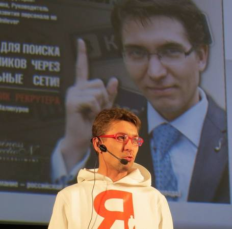Валинуров Ильгиз Business Connection , директор
Турбо-Рекрутинг: как находить лучших сотрудников быстрее конкурентов?
Кандидаты похожи один на другого и не из кого выбрать?
Лучшие кандидаты не доходят до собеседований с Вами?
Выбранные Вами кандидаты предпочитают других работодателей?
HR-служба работает медленно?Вы будете уверенно знать:
- Как привлечь самых лучших на рынке труда;
- Как сделать “продающее” объявление о вакансии;
- Как получить максимально адекватные резюме;
- Ключевые этапы собеседования, которые нельзя пропустить;
- Как и сколько платить новому сотруднику;
- Получите более 25 бесплатных источников получения кандидатов;
- Узнаете как сделать, что бы кандидат выбрал именно ваше предложение;
- Научитесь отрабатывать контр-офферы ваших конкурентов;
- Узнаете как легко собирать реальные рекомендации с предыдущих мест работы;
- Проведете аудит ваших процессов рекрутинга;
- Узнаете, кого стоит уволить в вашей компании прямо сегодня;
- И самое главное – как самостоятельно и уверенно управлять процессом подбора персонала, а не ждать “идеального кандидата”.Проголосовало:
Требуется регистрация на конференции
5
-
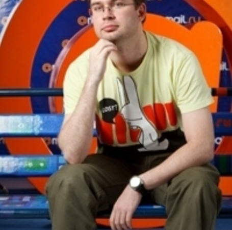Востриков Юрий Mail.RU , Руководитель группы Оптимизации
Octopus: фабрика NoSQL
Написание собственной БД --- зачастую единственный выбор в условиях ограниченных аппаратных ресурсов и высокой нагрузки. Несмотря на большое количество готовых реляционных и NoSQL баз данным, они могут не иметь специфических характеристик, необходимых для для проекта.
В данном докладе рассматривается устройство OpenSource фреймворка Octopus для написания NoSQL баз данных. На примере накопленного опыта написания и эксплуатации NoSQL в Mail.RU, показывается какие технические решения легли в основу фреймворка. В частности, рассматриваются преимущества использования кооперативной многозадачности перед традиционным callback-ориентированным подходом; устройство специализированных аллокаторов памяти и их преимущества перед malloc(); особенности реализованных индексов; устройство сохранения состояния сервера на диск и репликации. На примере уже существующих модулей Octopus для хранения диалогов и централизованных ratelimit показываются преимущества написания собственных специализированных решений перед традиционными подходами. В качестве демонстрации приводится пример написания простейшего NoSQL хранилища на базе фреймворка Octopus.
Проголосовало:
Требуется регистрация на конференции
5
-
Малаховский Евгений Лаборатория Малаховского , Директор
Разработка мобильных приложений на iOS [iPhone/iPad] / Android с серверной частью на "1С-Битрикс" за 7 дней
* доступные на данный момент средства разработки мобильных приложений на iOS и Android с бэкендом на 1С-Битрикс
* преимущества разработки мобильных приложений с бэкендом на 1С-Битрикс
* мастер-класс разработки нативного мобильного приложенияПроголосовало:
Требуется регистрация на конференции
5
-
Добрусин Алексей Гедокорп , Генеральный директор
Создание digital стратегии в условиях, когда стратегия не нужна
Создание Digital - стратегии для бизнеса: это вообще кому-нибудь нужно?
Модель SOSTAC - как основа стратегии. Что за страшное слово?
Работа со спросом в интернете. Как? Зачем? Кому?
Важность расчёта экономики бизнеса. А это тут причем?
Проголосовало:
Требуется регистрация на конференции
5
-
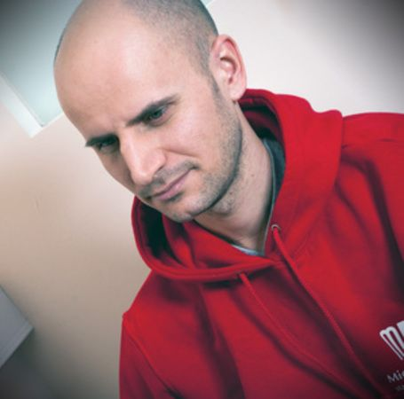Кечинов Михаил REES46 , Основатель
Performance marketing для брендов
Как производитель может рекламировать свои товары по CPA/CPC на фоне общего снижения эффективности CPM? Конверсия в заказы для производителя товаров.
Проголосовало:
Требуется регистрация на конференции
5
-
Чесноков Алексей AIDA-Media , Директор
Как доминировать над агентством
Рассматривается взаимодействие агентств с клиентами по контекстной рекламе. Основные ошибки заказчиков, основная мотивация агентств и пр.
Тезисы:
• Какие функции контекстной рекламы может «забыть» подключить ваше агентство.
• Почему агентствам интересен CTR, а не конверсии.
• Как должен выглядеть отчет от агентства.
• Факторы, влияющие на контекстную рекламу, о которых не хочет помнить клиент.
• Опасность бесплатных аудитов от агентств.
• БМ мания на контекстном рынке.
• Ржавый искусственный интеллект от агентств под соусом нано-технологий будущего.
• «Не мы такие, Директ такой…» (комиссионная мотивация со стороны Яндекс Директ, побуждающая агентства к максимизации бюджета клиентов).
• Директ лукавый.Проголосовало:
Требуется регистрация на конференции
3
-
Владислав Архипов Dentons , Советник
Интеллектуальная собственность в индустрии компьютерных игр
Доклад представляет собой краткий и практически-ориентированный мастер-класс, рассчитанный на аудиторию разработчиков компьютерных игр, желающих узнать больше о правовых аспектах защиты своих интеллектуальных прав.
Вы узнаете из каких охраняемых элементов может складываться игра и что это означает на практике; при помощи каких юридических инструментов следует оформлять отношения с командой разработки и/или издателем, на что обращать внимание, включая нюансы (лицензионный договор и договор об отчуждении исключительного права, договор авторского заказа, система документов о служебных произведениях). Отдельным пунктом мы затронем вопрос «клонирования игр»: каков размер возможных компенсаций и в каких случаях она может взыматься, чем полезны положения договора о выборе суда и применимого права, как ограничена ответственность «информационных посредников» и какое это имеет значение в игровой индустрии, в том числе для различных платформ дистрибуции (App Store, Google Play, Steam и др.).
Между делом мы также затронем «горячие» вопросы регулирования контента и рассмотрим краткий обзор существующих ограничений (изображения граждан, персональные данные, «publicly offensive»-информации). В докладе будут содержаться примеры из актуальной практики.Проголосовало:
Требуется регистрация на конференции
3
-
Кукина Анна IT company ASMART , Директор по развитию
SMM: идем по верному контент-плану!
SMM: что это и как использовать в сфере ИТ
Закон трех С - или что волнует читателя?
Копирайтинг без границПроголосовало:
Требуется регистрация на конференции
3
-
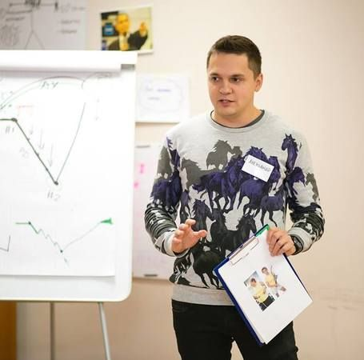Шестаков Александр Sape.ru , Руководитель проекта Pr.Sape
Изменение конъюнктуры рынка ссылочного спроса
- эволюция классических подходов продвижения
- альтернативные источники роста
- прогнозы и полезные советы на будущееПроголосовало:
Требуется регистрация на конференции
3
-
 Дегтярев Дмитрий 7 Дач , Технический директор
Дегтярев Дмитрий 7 Дач , Технический директорПочтовые рассылки для контентных проектов - как часто, кому, что и зачем
В настоящий момент 85 тыс читателей нашего сайта подписались на рассылку. За март мы получили 654 025 переходов на сайт. Т.е. в среднем, каждый подписчик вернулся на сайт 7,5 раз за месяц. Это стабильный показатель, который мы достигаем месяц за месяцем.
Круто? Хотите так же для своего проекта?
Мы уже организовали рассылку для нескольких других сайтов и везде наблюдается схожая, очень высокая отдача. В целом сейчас мы рассылаем более 10 млн писем в месяц.
Я расскажу:
- как получать подписчиков, какой конверсии ждать от попапов и тизеров
- что посылать, длинное письмо или короткое
- как часто надо делать рассылку
- что такое лид статьи и почему он так важен
- как убрать ручной труд при подготовке рассылок и использовать коллаборативную фильтрацию
- как экономить на сервисах рассылкиПроголосовало:
Требуется регистрация на конференции
2
-
Клебанович Виталий Safe Online Reputation , Руководитель отдела рекламы и маркетинга
"Safe Online Reputation – сокращаем дистанцию между клиентом и вами!"
Если вам интересно узнать:
- как получить комплексное решение для обратной связи с клиентами;
- о новых современных возможностях укрепления и развития вашего бизнеса;
- как получить надежную защиту от распространения неправдивых отзывов конкурентов;
- как помочь своим клиентам убедиться в надёжности компании и продукции благодаря виджетам;
- как получить дополнительное SEO-продвижение сайта;
- как сделать так, чтобы отзывы ваших клиентов способствовали повышению лояльности, а вместе с тем и увеличивали прибыль компании;
- о принципах работы системы, увидеть реальные кейсы наших клиентов и оценить результаты, которые они достигли за время работы с системой Safe Online Reputation.Проголосовало:
Требуется регистрация на конференции
2
-
Чесноков Алексей AIDA-Media , Директор
Видеоинфографика – как правильно заказывать
- как избежать ошибок при выборе подрядчика и заказе инфографики;
- инфографический видеоролик как инструмент. Какие задачи можно решать с его помощью;
- когда видео становиться инфографикой, а когда остается неудачной анимацией;
- реальные кейсы или «игра со зрителями».Проголосовало:
Требуется регистрация на конференции
2
-
Чесноков Алексей AIDA-Media , Директор
Антивирусное видео
В докладе раскрывается тема вирусного видео, говорится о том, что очень часто под соусом вирусного видео клиентам предлагается просто видео развлекательного характера. Говорится о накрутках счетчиков, приводятся неудачные видео. Делаются акценты на основных моментах в создании видео, которым необходимо уделить внимание.
Проголосовало:
Требуется регистрация на конференции
2
-
 Сергей Кулешов 1С-Битрикс , Заместитель генерального директора
Сергей Кулешов 1С-Битрикс , Заместитель генерального директораВыживший
- При ограниченных рекламных ресурсах
- Большой конкуренции
- Небольшой клиентской базе
- Выход на рынок богатых и крупных игроковКак выжить? Где резервы для увеличения дохода интернет-магазина? Внутри самого магазина.
Расскажем об инструментах измерения и улучшения конверсии магазина.Проголосовало:
Требуется регистрация на конференции
2
-
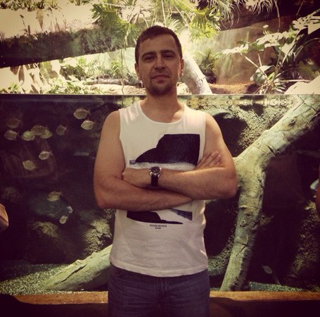Чуркин Олег Rambler&Co , Ведущий инженер-разработчик Python
Как подружить Django ORM и PostgreSQL
1. Ключевые ошибки при описании схемы данных
2. Как выполнить миграцию и не тормознуть СУБД?
3. Профилирования SQL запросов
4. Транзакции и атомарные операции
5. Классические ошибки Django-разработчиков
6. Как быстро выбрать TOP-N элементов в каждой группе?
7. Правильная паджинация на больших данных
8. JSONB или Entity-Attribute-Value?
9. Полнотекстовый поиск в PosgreSQL – какие есть варианты?Проголосовало:
Требуется регистрация на конференции
1
-
Чесноков Алексей AIDA-Media , Директор
Быстрее, выше, сильнее – продажа, конверсия, конкуренция!
Доклад построен на основе более 200 проведенных аудитов сайтов. В рамках доклада рассматриваются основные ошибки, присутствующие на сайтах, с точки зрения юзабилити, маркетинга и коммерции, которые приводят к снижению конверсии, уровню продаж и в конечном итоге к тому, что ваш потенциальный клиент уходит к конкурентам.
Вся эта информация подается на основе реальных кейсов и непосредственном участии аудитории, в процессе презентации со слушателями ведется диалог, что делает доклад более живым и интересным.
Проголосовало:
Требуется регистрация на конференции
1
-
Иванов Павел B2Basket.ru , Генеральный директор
Эффективное управление маркетплейсами
Как считать эффективность? CPO, ROMI, ДРР.
Обзор маркетплейсов, классификация по возможностям управления.
Возможности маркетплейсов через призму показателей эффективности:
Потоварное управление;
Управление группами товаров;
Управление фидом;
Дополнительные возможности маркетплейсов.
Кейсы.Проголосовало:
Требуется регистрация на конференции
0